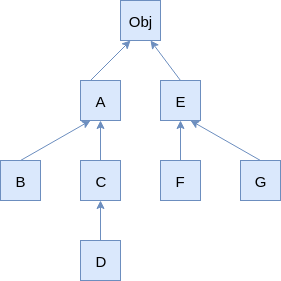

You have the following class hierarchy with the base class Obj.

Suppose, you also have a class where a method has the return type A. If you want to override this
method, which return types can the overriding methods have?
Choose the most accurate answer.